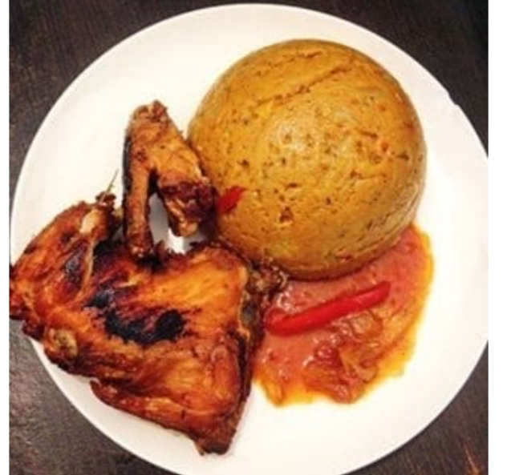
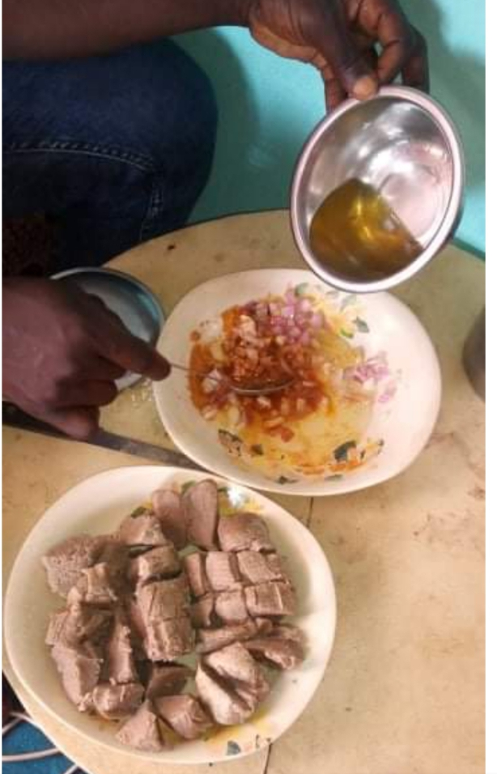
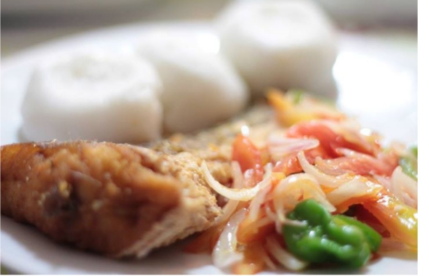
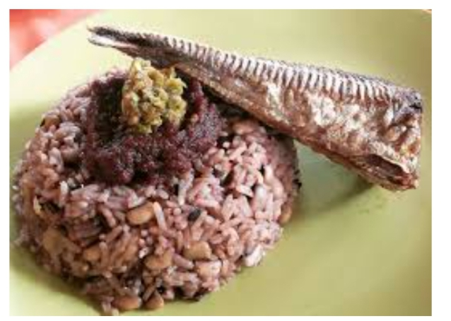
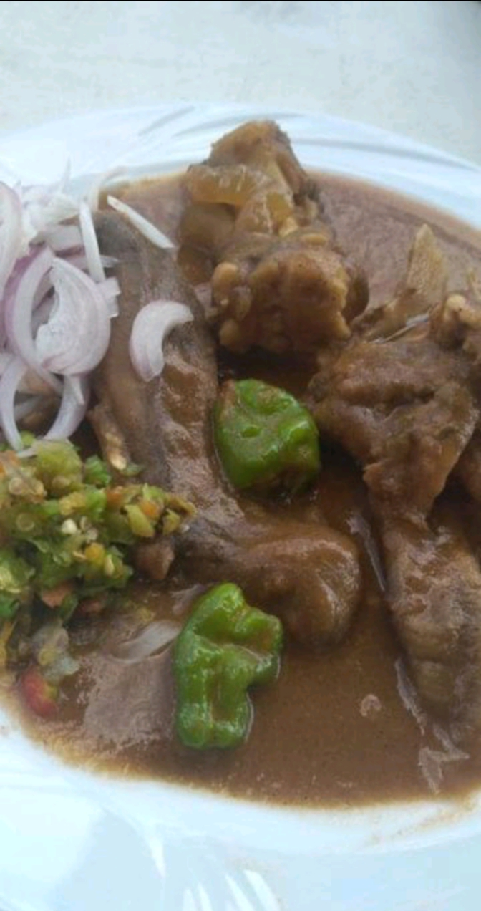
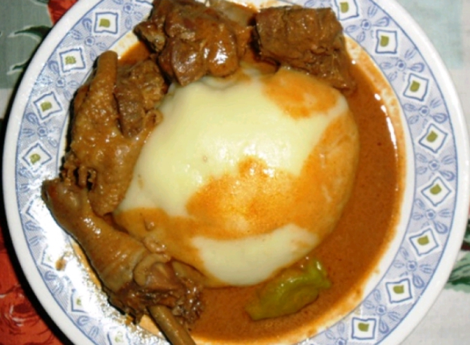

La cuisine béninoise se compose de plusieurs plats délicieux. Elle est variée, riche en couleur et en vitamines. Parmis ces nombreux plats nous pouvons citer:
Le Djewo(ou Amiwo)
Le plat de Djèwo en fon signifie la pate salée et est fait a base de la pate de mais. La différence du djèwo, de la pate de mais réside dans le fait que le djèwo est assaisonné avec de la sauce, un peu comme le riz au gras et se déguste ainsi.Ce plat est très présent au Sud et dans le centre du pays.
Le toubani
Le toubani, le petit déjeuner des Parakois. C'est une recette du Nord Bénin. Il est fait à base de la farine de haricots. On l'accompagne avec du pimrnt sec et de l'huile d'arachide. Etant un plat de résistance, il est important de le consommer surtout les matins avant vos activités journalières.
Le Ablo
Le ablo se retrouve très souvent dans le Sud du Bénin. Elle est faite à base de la farine de riz.D'un délice exquis, le plat de ablo se présente sous forme de petits gateaux cuits au four artisanal. Il est souvent accompagné d'un jus à base de piment avec poisson frit.
Le Watché(ou Atassi)
Le Watché est un des nombreux plats typiquement béninois. Très présent dans le Nord comme dans le Sud, il est à base d'un mélange de riz et de haricot. Dans le Sud, on l'appelle le Atassi.Il est généralement accompagné d'une friture à base de tomate au Sud et d'un piment assaisonné dans le Nord. On le déguste avec du fromage, de la viande ou encore du poisson.
Le Dakouin

Le Dakouin est une pate à base de la farine de gari mélangée à la sauce de poisson. Il est consommé traditionnellement dans la région du lac Ahémé. Dans cette région, on retrouve en abondance des crustacés et des poissons.
Le Hankpètè
Le Hankpètè est une sauce à base de sang de porc qui accompagne la viande grillée. La région de Porto Novo est son origine.
L'Igname pilée
L'igname pilée ("Sokoro" ou "Tchokourou" en Dendi ou "Agoun" en Fon) est un plat typique du Bénin et originaire de Savalou. Dans cette région, il est souvent accompagné d'une sauce d'arachide. Dans le Nord du pays, il est plus souvent accompagné d'une sauce à base de légumes.
Le Wassa-wassa

Le Wassa-wassa est un plat principalement béninois à base de cossettes d'igname, parfois appelé "couscous d'igname". Il peut etre consommé à tout moment et on le retrouve plus dans le Nord du Bénin.
Tout ces plats sont très délicieux et remplis de vitamines qui sont excéllents pour la santé